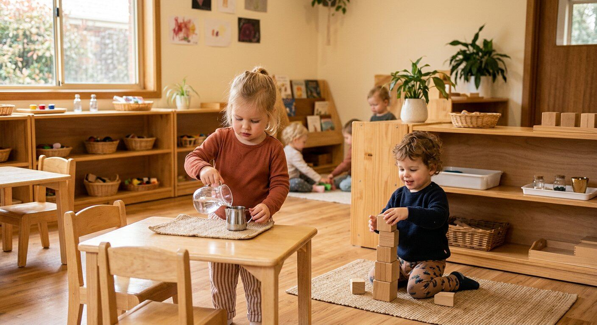

18 months – 3 years
First beginnings
Toddler Community
Max 12 children · 2 guides
Half-day 8:00–12:00 or full-day to 3:30
Potty-learning friendly
These are the miracle years: language explodes, personalities bloom, and little hands ache to do things "by myself." Our toddler environment is soft, slow and perfectly child-sized, so every day ends with a proud "I did it!"
- Practical life: pouring, dressing, food prep
- Language: songs, stories, rich vocabulary
- Movement: climbing, balancing, carrying
- Sensorial exploration & early art
- Gentle toilet-learning partnership
- Daily outdoor garden time